TL;DR: A layered diffusion framework for content-preserving video editing.
Instead of regenerating every pixel, Vera generates an edit layer and an alpha matte
for compositing with the source video, separating creative editing from content preservation by design.
Disclaimer: this is a research prototype, not an official Netflix product.
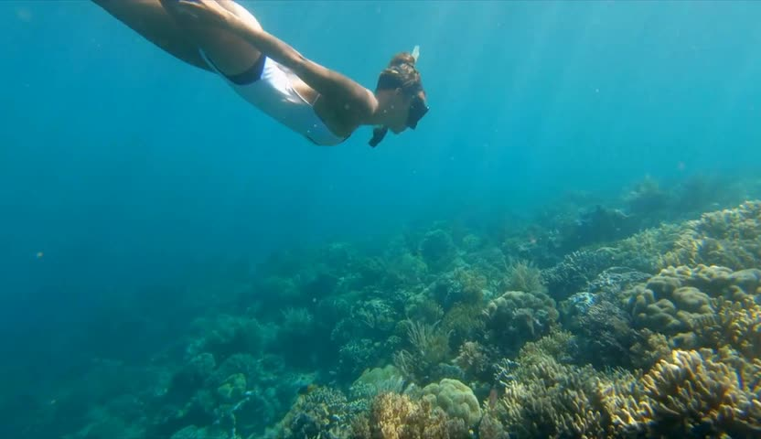
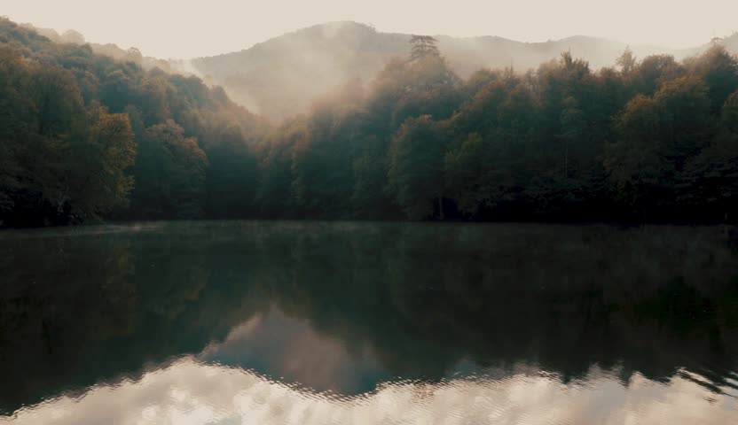
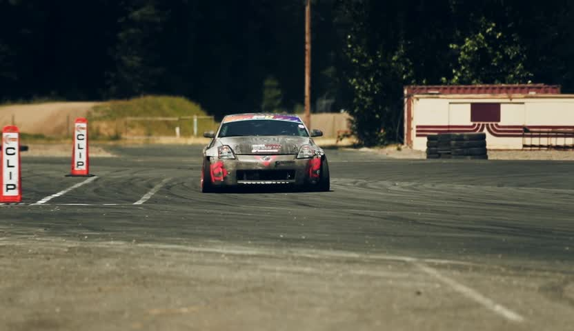
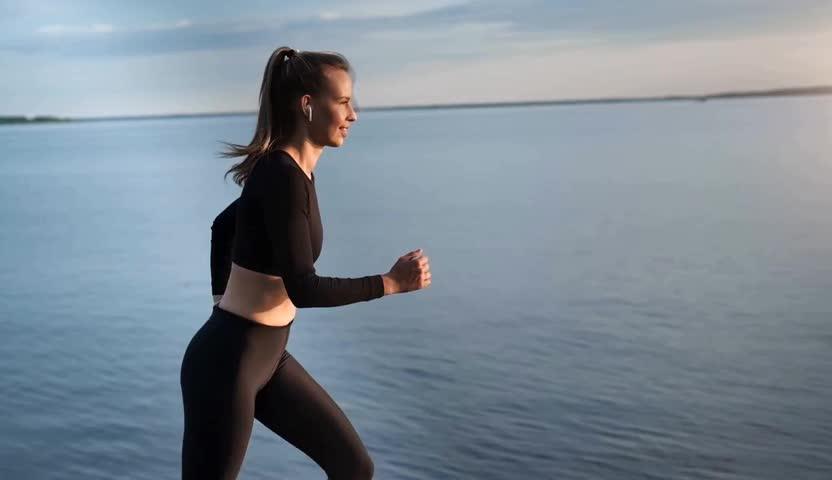
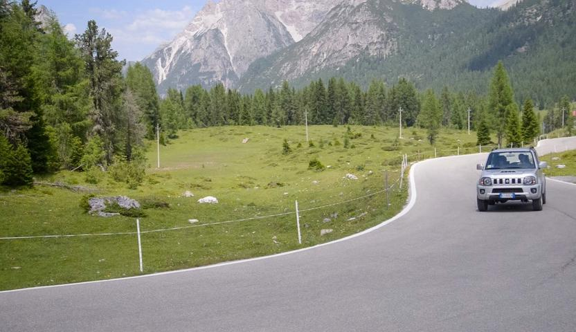
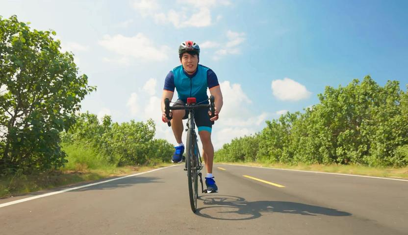
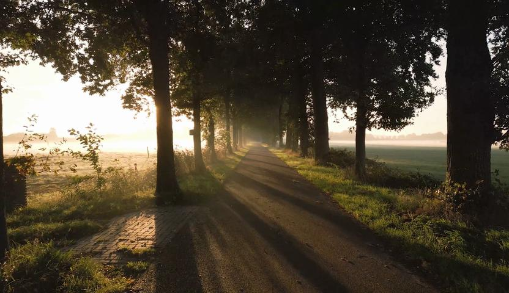
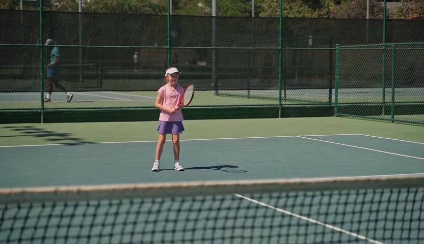
"Add a massive sea turtle with a textured olive-green shell and weathered flippers swimming gracefully..."
(Click on any video to pause)
Input
Hover for raw RGB
Edit Layer
Composite
Method
Inference Pipeline
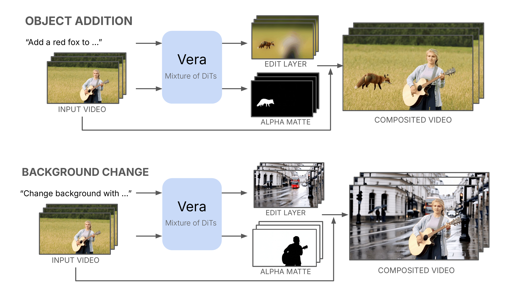
Given a source video and a text editing instruction, Vera's MoT architecture jointly generates an edit layer, an alpha matte, and a composite video. The edit layer and alpha matte are then composited with the source video to produce the final edited output.
MoT Architecture
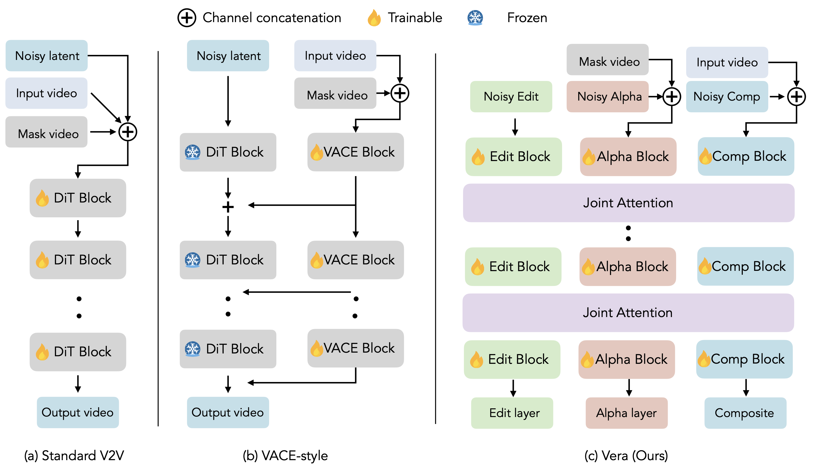
We extend the text-to-video DiT into a Mixture-of-Transformers (MoT) architecture.
Separate DiTs process the edit layer, alpha matte, and composite video independently,
while interacting through joint self-attention to ensure coherent edits that
blend seamlessly with the original content.
Results | Qualitative Comparisons
Object Addition
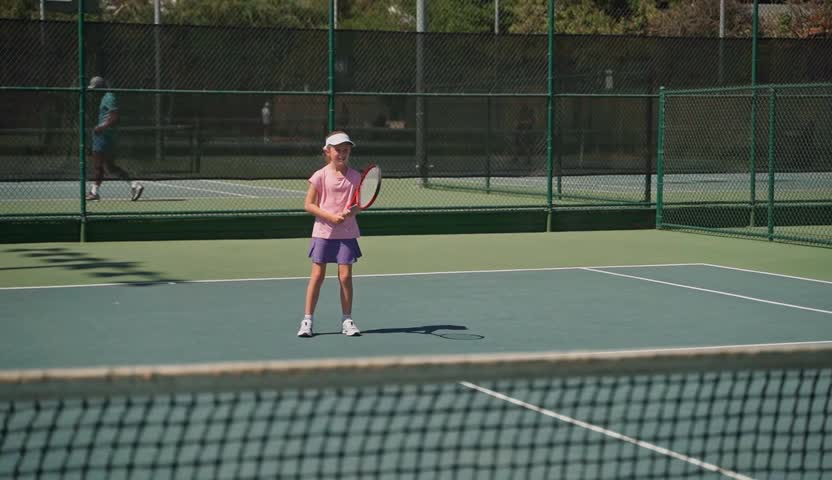
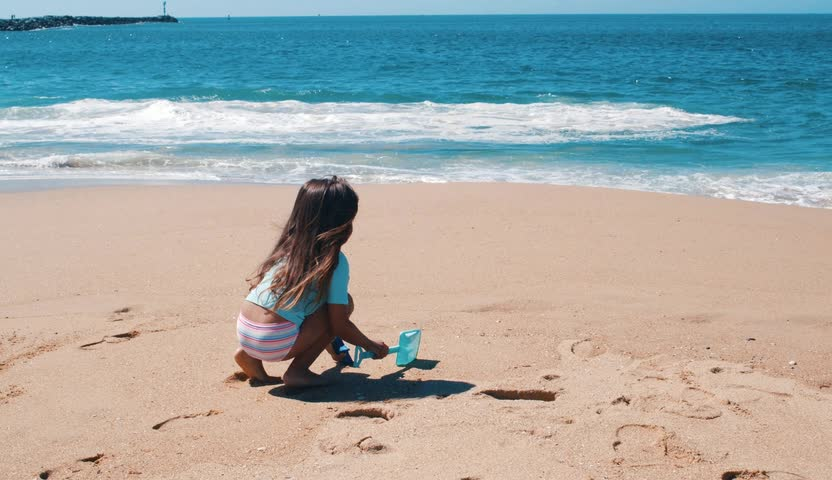
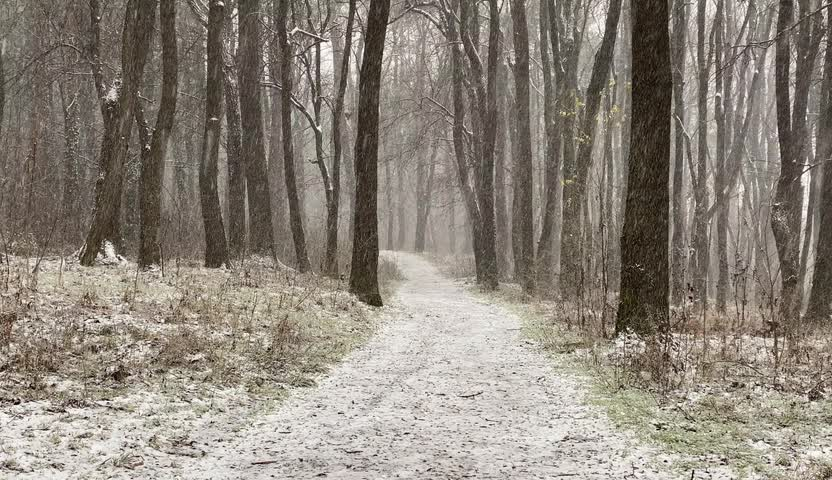
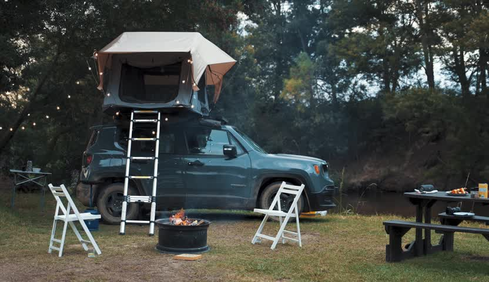
Background Change
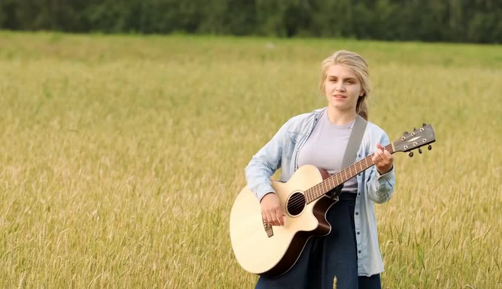
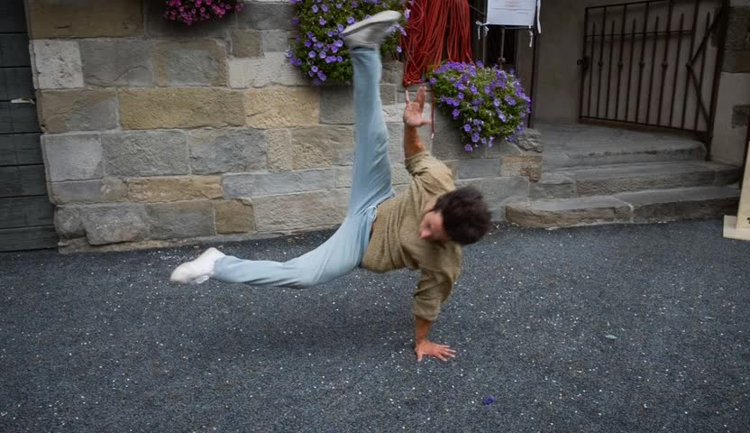
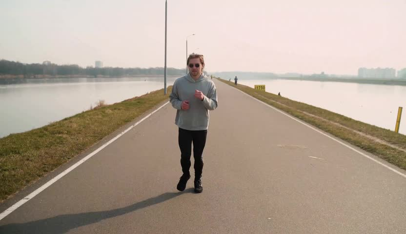
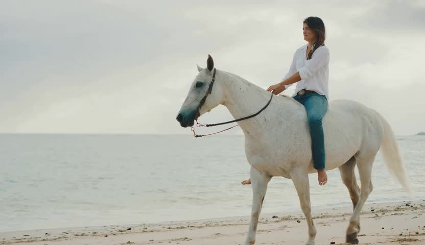
"Add a medieval knight in polished silver plate armor walking steadily on the sand..."
(Click on any video to pause · Hover over outputs for difference heatmap)
Input
Hover for diff
Vera-14B
Hover for diff
VACE-14B
Results | Quantitative Comparisons
Comparison with existing video editing methods.
VLM-based metrics (CS, CT, IS) are averaged over three VLMs.
OC and TF are near-identical across models and not bolded.
Best results in other columns are in bold.
Method
Content Preservation
Video Quality
Instruction Compliance
PSNR ↑
SSIM ↑
LPIPS ↓
OC ↑
TF ↑
CS ↑
CT ↑
OSC ↑
IS ↑
Object Addition
Ditto
13.1
0.447
0.529
0.98
0.98
2.84
3.13
0.239
3.62
Lucy-Edit
19.0
0.798
0.301
0.98
0.98
2.54
2.79
0.238
2.98
VideoPainter
10.7
0.354
0.669
0.64
0.98
2.54
2.80
0.247
2.87
VACE-1.3B
10.3
0.323
0.667
0.98
0.98
2.55
3.01
0.250
2.99
VACE-14B
10.1
0.325
0.666
0.98
0.98
2.63
3.08
0.248
3.26
ReCo
16.8
0.778
0.280
0.98
0.98
3.18
3.35
0.243
3.77
Vera-1.3B
25.3
0.949
0.078
0.98
0.98
3.49
3.47
0.243
4.05
Vera-14B
26.1
0.950
0.082
0.98
0.98
3.59
3.66
0.244
4.13
Background Change
Ditto
21.7
0.888
0.092
0.97
0.97
3.29
3.25
0.240
4.26
Lucy-Edit
22.3
0.908
0.078
0.96
0.96
2.50
2.50
0.235
3.71
VideoPainter
29.9
0.975
0.032
0.83
0.97
2.29
2.31
0.237
3.64
VACE-1.3B
31.5
0.981
0.024
0.96
0.97
3.74
3.61
0.245
4.48
VACE-14B
31.7
0.983
0.021
0.96
0.96
3.68
3.59
0.243
4.44
ReCo
24.9
0.935
0.061
0.96
0.97
2.45
2.71
0.220
3.05
Vera-1.3B
35.2
0.993
0.010
0.96
0.97
3.34
3.25
0.243
4.35
Vera-14B
36.2
0.993
0.010
0.96
0.97
3.28
3.21
0.242
4.38
Results | User Preference Study
2AFC user study results comparing Vera-1.3B against five baselines. Bars show our win rate across three
evaluation dimensions. Bold values with * indicate statistically significant results (p < 0.05, binomial test) where our model is preferred.
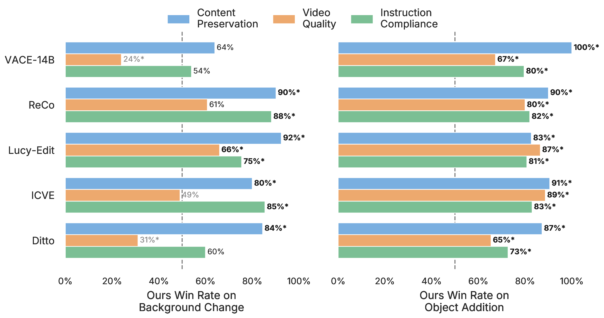
Dataset
We construct a layered video dataset to train our model using data pipelines that combine automated tools with manual annotations (see paper for details).
The full corpus contains 486K frames at 832×480 resolution, organized into three complementary subsets:
synthetic composites derived from VideoMatte240K with synthetic backgrounds;
realistic single-object videos from Pexels and Mixkit with natural camera motion; and
realistic multi-object videos with effects including shadows, reflections, occlusion, etc.
Below are representative samples per subset: each row shows the input video, alpha matte, edit layer (RGB), and target composite, with the text editing instruction.
Data sources & acknowledgments:
We gratefully acknowledge the following sources used in constructing our dataset.
Synthetic composites are derived from VideoMatte240K.
Real stock footage is sourced from Pexels
and Mixkit under their respective free-use licenses;
please refer to each platform for full license terms.
(Click any video to pause or resume that row)
Input Video
Alpha Matte
Edit Layer
Composite
BibTeX
@article{zheng2026vera,
title = {Vera: A Layered Diffusion Model for Content-Preserving Video Editing},
author = {Zheng, Hongkai and Cheng, Ta-Ying and Klein, Benjamin and Yue, Yisong and Yuan, Zhuoning},
journal = {arXiv preprint},
year = {2026}
}